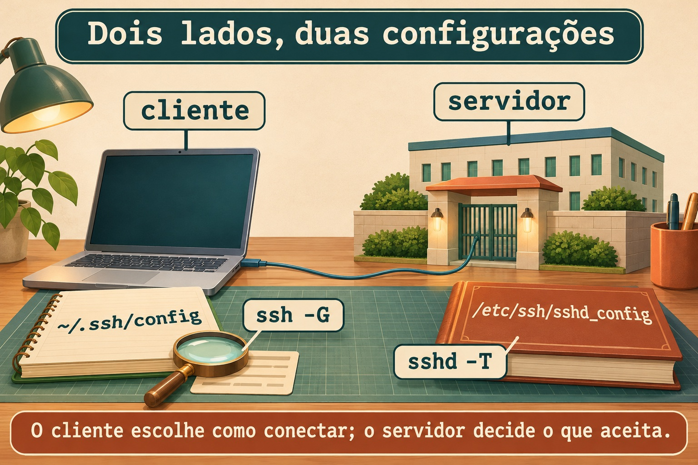
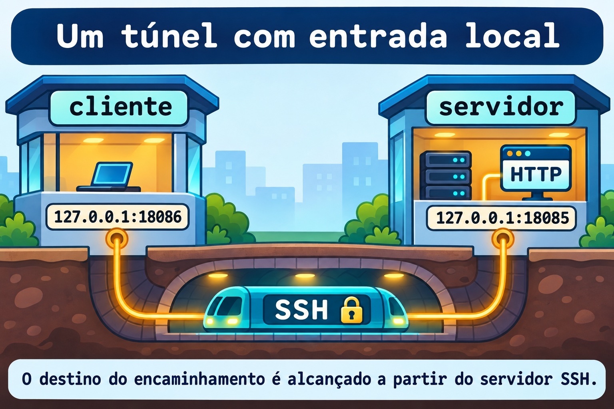

Aula 12.1 · SSH a fundo
No Windows Server, você já separa identidade, credencial e destino. No SSH, essa separação aparece na chave do usuário, na chave do host e na configuração do cliente. Depois do diagnóstico de rede do M11, você vai organizar conexões, usar um agente e abrir um túnel que só atende localmente.
Núcleo desta aula: o cliente decide como chegar; o servidor decide o que permite; a chave do host identifica o destino. Valide a configuração antes de aplicar e preserve uma sessão de recuperação. O resto é aprofundamento.
| Ficha | |
|---|---|
| Módulo | M12 · Segurança do host, aula 1 de 5 |
| Quando | Semana 17 |
| Ao final | Você confere identidades, organiza o cliente, usa agente e túnel local e valida regras de servidor sem perder acesso |
| Pré-requisitos | Aulas 0.2 e 11.5; student, SSH por chave nas duas VMs, sudo, python3, curl e noVNC |
| Tempo | Cerca de 90 minutos |
| Snapshots | m12a1-inicio e m12a1-fim nas VMs 201 e 202 |
1 · Aquecimento
Responda sem consultar. O gabarito fica no fim.
- Conectar à porta
22comnccomprova que sua chave foi aceita? - Por que uma escuta em
127.0.0.1não atende diretamente outra máquina? - Que diferença existe entre uma configuração salva e o comportamento efetivo?
2 · Por que importa
Você recebe um alerta de chave do host alterada. Apagar a entrada e tentar de novo faz a mensagem sumir, mas não explica quem está do outro lado. O caminho profissional é conferir a impressão digital pelo console confiável antes de aceitar a nova identidade.
Outro chamado diz que uma página interna não abre. O serviço escuta apenas no loopback do servidor. Um encaminhamento local permite chegar a essa porta pelo SSH sem publicar o HTTP na rede.
| Peça | Pergunta |
|---|---|
| Chave do host | Estou falando com o servidor esperado? |
| Chave do usuário | Este usuário controla a credencial autorizada? |
| Regra do servidor | Esta operação é permitida para esta conexão? |
3 · Modelo mental
O cliente guarda uma agenda de prédios. O servidor mantém sua portaria e uma lista de chaves públicas autorizadas. O agente é um balcão local que realiza assinaturas com uma chave carregada; ele não entrega a chave privada ao prédio.
cliente: destino + identidade -> canal SSH -> servidor: regras + autorização
| |
~/.ssh/config /etc/ssh/sshd_config
| |
ssh -G sshd -T

Ponte Windows
| Conceito | Windows com OpenSSH | Linux |
|---|---|---|
| Configuração do usuário | $HOME\.ssh\config | ~/.ssh/config |
| Agente | Serviço ssh-agent | Processo e socket do agente |
| Carregar chave | ssh-add | ssh-add |
| Inspecionar destino | ssh -G | ssh -G |
No Windows, o agente é um serviço: seu preparo pode exigir PowerShell elevado. O lab do agente abaixo acontece no Linux e usa um processo temporário, sem alterar o serviço do Windows.
4 · O essencial
Duas chaves com funções diferentes
A pública do usuário entra em authorized_keys no servidor. A privada fica protegida no cliente. As chaves do host identificam o servidor; a pública correspondente fica registrada em known_hosts no cliente após a conferência.
Use uma frase secreta na chave privada. O agente reduz a repetição da digitação, mas uma sessão local comprometida ainda pode usar as operações de assinatura oferecidas por ele.

Configuração do cliente
ssh -G mostra a configuração calculada sem abrir a conexão. Em geral, o primeiro valor encontrado para uma opção prevalece; coloque destinos específicos antes das regras gerais. -F permite testar uma agenda separada sem mexer na existente.
IdentitiesOnly yes limita as identidades oferecidas às configuradas. Não use StrictHostKeyChecking no como solução para uma identidade de servidor desconhecida.
Túnel local e salto
Em -L 127.0.0.1:18086:127.0.0.1:18085, o primeiro endereço é a entrada no cliente. O segundo é o destino alcançado pelo servidor SSH. Os dois loopbacks pertencem a lados diferentes da conexão.
-N dispensa o comando remoto. ExitOnForwardFailure yes detecta falha ao criar a escuta local, mas não comprova que o serviço de destino esteja funcionando.


ProxyJump usa um servidor intermediário para transportar a conexão até o destino. A autenticação do destino continua no cliente; não é preciso copiar a chave privada para o intermediário nem encaminhar o agente.
Servidor seguro, mudança verificável
sshd -t verifica sintaxe e condições de configuração; sshd -T mostra valores efetivos. Com -C, você informa os dados de uma conexão para avaliar regras Match. Nenhum desses testes substitui uma nova conexão real.
Antes de aplicar regras: tenha noVNC, preserve a sessão atual, valide, recarregue e teste uma segunda sessão com a chave. Só depois encerre a primeira. Nesta aula você valida uma configuração candidata fora de /etc; não recarrega o serviço ativo.
Rocky × Debian
| Item | Rocky 9 | Debian 13 |
|---|---|---|
| Cliente | openssh-clients | openssh-client |
| Servidor | openssh-server | openssh-server |
| Unidade de serviço | sshd.service | ssh.service |
| Validador | /usr/sbin/sshd | /usr/sbin/sshd |
| Política adicional | SELinux e política criptográfica | Configuração e políticas locais |
5 · Lab guiado
Repita os testes locais nas duas VMs como student. Você cria uma chave exclusiva de exercício e usa SSH de cada VM para ela mesma. Isso isola o aprendizado sem substituir a chave que já dá acesso pelo Windows.
Passo 1 · Proteger e conferir
Palpite: um snapshot substitui a verificação da chave do host?
No host Proxmox:
qm snapshot 201 m12a1-inicio
qm snapshot 202 m12a1-inicioNo terminal B de cada VM, confirme o usuário e os pré-requisitos. A pasta de exercício precisa estar ausente antes de criar uma nova.
id -un
command -v ssh ssh-keygen ssh-agent ssh-add python3 curl
test ! -e "$HOME/m12a1"
mkdir -m 700 "$HOME/m12a1"
sudo ss -lntp 'sport = :22'
sudo ss -lntp 'sport = :18085 or sport = :18086'Saída esperada: usuário student, ferramentas encontradas, SSH em escuta e portas 18085 e 18086 livres. Se alguma verificação falhar, ajuste o preparo antes de prosseguir.
Verifique: mantenha a sessão do Windows aberta e confirme que o console noVNC da VM está disponível.
Passo 2 · Criar identidade e agenda de exercício
Palpite: o servidor precisa receber a chave privada para autorizar a pública?
Crie a chave com uma frase secreta. Não deixe o campo vazio. Os caminhos abaixo são exclusivos desta aula.
ssh-keygen -t ed25519 -f "$HOME/m12a1/id_ed25519" -C m12a1-lab
chmod 700 "$HOME/.ssh"
cp -a "$HOME/.ssh/authorized_keys" "$HOME/m12a1/authorized_keys.inicio"
printf '\n' >> "$HOME/.ssh/authorized_keys"
cat "$HOME/m12a1/id_ed25519.pub" >> "$HOME/.ssh/authorized_keys"
chmod 600 "$HOME/.ssh/authorized_keys"
cat > "$HOME/m12a1/config" <<'EOF'
Host m12-local
HostName 127.0.0.1
User student
Port 22
IdentityFile ~/m12a1/id_ed25519
IdentitiesOnly yes
UserKnownHostsFile ~/m12a1/known_hosts
HostKeyAlgorithms ssh-ed25519
ForwardAgent no
ExitOnForwardFailure yes
ServerAliveInterval 30
ServerAliveCountMax 3
EOF
chmod 600 "$HOME/m12a1/config"
ssh -F "$HOME/m12a1/config" -G m12-local | grep -E '^(hostname|user|port|identityfile|forwardagent) 'Saída esperada: par de chaves criado, apenas a pública adicionada à autorização e configuração calculada apontando para o loopback. O arquivo authorized_keys já existia pelo acesso por chave da aula 0.2.
Verifique: ssh -G não abriu uma sessão nem confirmou a aceitação da chave. Confira usuário, destino e arquivo de identidade antes da tentativa real.
Passo 3 · Conferir o host e autenticar
Palpite: a impressão digital pedida no primeiro acesso pertence à sua chave de usuário ou ao servidor?
No console confiável da VM, veja a impressão digital da chave pública do host. No B, abra o acesso de exercício e compare antes de aceitar.
sudo ssh-keygen -lf /etc/ssh/ssh_host_ed25519_key.pub
ssh -F "$HOME/m12a1/config" m12-local 'id -un; hostname'Saída esperada: o primeiro acesso usa a agenda separada, pede confirmação da identidade ainda não registrada e solicita a frase secreta da chave. O comando remoto mostra student e o hostname da própria VM.
Verifique: a impressão exibida no acesso precisa coincidir com a obtida no console. Se não coincidir, pare e investigue.
Decida 1
O SSH avisa que a chave do host mudou. O que vem primeiro?
| Opção | Ação |
|---|---|
| A | Apagar todas as entradas de known_hosts |
| B | Conferir a identidade pelo console confiável |
| C | Desativar a verificação de host |
Escolha B. Uma reinstalação pode explicar a mudança, mas a confirmação vem de uma fonte independente da conexão em dúvida.
Passo 4 · Usar um agente temporário
Palpite: carregar a chave no agente apaga o arquivo privado do disco?
No B, abra uma shell filha sob um agente próprio. Os comandos seguintes são executados dentro dela.
ssh-agent bash
ssh-add -t 600 "$HOME/m12a1/id_ed25519"
ssh-add -l
ssh -F "$HOME/m12a1/config" -o BatchMode=yes m12-local 'id -un'Saída esperada: uma identidade carregada por até dez minutos e acesso sem nova pergunta de frase secreta. O agente pode assinar usando a chave em memória; o arquivo privado continua existindo.
Verifique: o comando com BatchMode=yes não pode recorrer a uma pergunta interativa. Se falhar depois de dez minutos, recarregue apenas a chave de exercício com ssh-add.
Passo 5 · Abrir um encaminhamento local
Palpite: abrir o túnel publica o HTTP em todas as interfaces do cliente?
No terminal A da mesma VM, inicie HTTP só no loopback.
mkdir "$HOME/m12a1/www"
printf 'SSH TUNNEL ok\n' > "$HOME/m12a1/www/index.html"
python3 -m http.server 18085 --bind 127.0.0.1 --directory "$HOME/m12a1/www"No B, dentro da shell do agente, deixe o túnel em primeiro plano. No C, faça os testes do segundo bloco.
ssh -F "$HOME/m12a1/config" -N -L 127.0.0.1:18086:127.0.0.1:18085 m12-localss -lnt 'sport = :18086'
curl --noproxy '*' --connect-timeout 2 --max-time 4 -fsS http://127.0.0.1:18086/Saída esperada: entrada em 127.0.0.1:18086 e resposta SSH TUNNEL ok. O SSH transporta a conexão até a porta HTTP do lado servidor.
Verifique: ss deve mostrar loopback, não 0.0.0.0 nem [::]. Neste exercício os dois lados estão na mesma VM, mas continuam sendo papéis diferentes; em uso remoto, o último loopback pertence à VM de destino.
Decida 2
O túnel abriu, mas o HTTP falha. O que deve ser verificado antes de culpar a criptografia?
| Opção | Ação |
|---|---|
| A | O endereço e a porta do serviço no lado servidor |
| B | Apagar a chave privada |
| C | Abrir o HTTP para a rede inteira |
Escolha A. A escuta local pode existir enquanto o destino do encaminhamento está errado ou sem serviço.
Passo 6 · Salto e configuração candidata
Palpite: passar por um intermediário exige deixar a chave privada nele?
Do terminal do Windows já preparado na 0.2, faça o salto pela Rocky até a Debian. Os aliases existentes conservam usuário e arquivo de chave de cada destino. O cliente local precisa conseguir autenticar nas duas VMs com suas chaves existentes. Confira qualquer nova identidade pelo console.
ssh -o ForwardAgent=no -J rocky-lab debian-lab hostnameNas duas VMs, inspecione as regras atuais sem mudá-las e escreva uma candidata separada. Essa porta candidata não será aberta.
sudo /usr/sbin/sshd -t
sudo /usr/sbin/sshd -T -C user=student,host=localhost,addr=127.0.0.1 | grep -E '^(permitrootlogin|pubkeyauthentication|passwordauthentication|kbdinteractiveauthentication|allowtcpforwarding|allowagentforwarding) '
cat > "$HOME/m12a1/sshd.candidate" <<'EOF'
Port 22285
ListenAddress 127.0.0.1
HostKey /etc/ssh/ssh_host_ed25519_key
PidFile /run/sshd-m12a1.pid
AuthorizedKeysFile .ssh/authorized_keys
PermitRootLogin no
PubkeyAuthentication yes
PasswordAuthentication no
KbdInteractiveAuthentication no
UsePAM yes
AllowAgentForwarding no
AllowTcpForwarding local
X11Forwarding no
EOF
sudo /usr/sbin/sshd -t -f "$HOME/m12a1/sshd.candidate"
sudo /usr/sbin/sshd -T -f "$HOME/m12a1/sshd.candidate" -C user=student,host=localhost,addr=127.0.0.1 | grep -E '^(permitrootlogin|pubkeyauthentication|passwordauthentication|kbdinteractiveauthentication|allowtcpforwarding|allowagentforwarding) 'Saída esperada: o salto retorna o hostname da Debian. A candidata passa na sintaxe e mostra login de root e autenticações interativas desativados, chave pública ativa, encaminhamento de agente desativado e encaminhamento TCP local permitido.
Verifique: a candidata não contém Include, portanto não herda os arquivos ativos neste teste. Nenhuma dessas opções foi aplicada ao serviço: a porta 22 e o acesso normal precisam continuar funcionando.
6 · Quebre e conserte
Quebra 1 · Destino de cliente errado
Sintoma: a tentativa abaixo falha, mas a sessão já aberta continua funcionando.
Investigação: compare a porta calculada com a porta em escuta.
ssh -F "$HOME/m12a1/config" -p 22286 -G m12-local | grep '^port '
ssh -F "$HOME/m12a1/config" -p 22286 -o ConnectTimeout=3 m12-local hostname
sudo ss -lntp 'sport = :22 or sport = :22286'Causa: a opção da linha de comando substituiu a porta da agenda. A falha acontece antes da autenticação.
Conserto: retire -p 22286 da tentativa e use a agenda validada.
Verifique: ssh -F "$HOME/m12a1/config" m12-local hostname volta a responder.
Prevenção: consulte ssh -G antes de mudar o servidor para compensar um erro do cliente.
Quebra 2 · Túnel aberto, destino fechado
Encerre o túnel no B com Ctrl+C. Confirme que 18087 não está em escuta e use essa porta incorreta como destino.
Sintoma: a entrada local existe, mas o HTTP não entrega o conteúdo.
Investigação: no B, abra o túnel abaixo; no C, repita o curl da entrada.
ss -lnt 'sport = :18087'
ssh -F "$HOME/m12a1/config" -N -L 127.0.0.1:18086:127.0.0.1:18087 m12-localCausa: a entrada foi criada, mas o servidor SSH não encontra serviço no destino escolhido. O terminal do túnel informa a falha de abertura do canal.
Conserto: encerre esse túnel e reabra o comando do passo 5 com destino 18085.
Verifique: o mesmo curl volta a mostrar SSH TUNNEL ok.
Prevenção: registre os dois lados do encaminhamento; testar a escuta local não testa a aplicação remota.
Quebra 3 · Regra inválida antes de aplicar
Sintoma: a candidata deixa de passar na validação, mas o SSH ativo continua disponível.
Investigação: acrescente uma diretiva inexistente apenas na cópia de exercício.
printf '\nInvalidOption yes\n' >> "$HOME/m12a1/sshd.candidate"
sudo /usr/sbin/sshd -t -f "$HOME/m12a1/sshd.candidate"Causa: a diretiva não existe. O validador informa o arquivo e a linha problemática sem precisar reiniciar o serviço.
Conserto: remova apenas a linha plantada na candidata.
sed -i '/^InvalidOption yes$/d' "$HOME/m12a1/sshd.candidate"
sudo /usr/sbin/sshd -t -f "$HOME/m12a1/sshd.candidate"Verifique: a candidata volta a passar; abra uma nova sessão normal do Windows para comprovar que o serviço real continua acessível.
Prevenção: valide sintaxe e valores efetivos antes de recarregar. Depois da aplicação, teste uma segunda sessão antes de fechar a primeira.
Limpeza
Encerre o túnel com Ctrl+C no B e o HTTP com Ctrl+C no A. No B, remova apenas a chave de exercício do agente e saia da shell filha. Não use a opção que remove todas as identidades de um agente compartilhado.
ssh-add -d "$HOME/m12a1/id_ed25519"
exitAgora na shell original, retire apenas a linha da pública adicionada. O filtro preserva outras chaves; uma saída vazia do filtro não é autorização para restaurar cegamente o backup inteiro. O separador em branco acrescentado no preparo pode permanecer.
grep -vxF -f "$HOME/m12a1/id_ed25519.pub" "$HOME/.ssh/authorized_keys" > "$HOME/m12a1/authorized_keys.clean"
diff -u "$HOME/.ssh/authorized_keys" "$HOME/m12a1/authorized_keys.clean"Confira no diff que só a linha m12a1-lab foi removida. Apenas depois dessa conferência, grave o resultado.
cat "$HOME/m12a1/authorized_keys.clean" > "$HOME/.ssh/authorized_keys"
chmod 600 "$HOME/.ssh/authorized_keys"
sudo ss -lntp 'sport = :18085 or sport = :18086'Guarde os arquivos de exercício em sua pasta privada; a chave já não está autorizada. Não altere a chave do Windows nem sua autorização original.
7 · Armadilhas
| Erro comum | O que fazer | Por quê |
|---|---|---|
| Copiar a privada para o salto | Usar ProxyJump | O cliente autentica no destino |
| Abrir o túnel em todas as interfaces | Vincular a entrada a 127.0.0.1 | Mantém a entrada local |
Confundir ssh_config com sshd_config | Identificar cliente e servidor | Cada lado decide coisas diferentes |
| Desligar senha antes de testar a chave | Validar nova sessão e manter console | Evita perder acesso |
| Remover toda a confiança do cliente | Conferir a identidade e corrigir a entrada específica | Preserva os outros destinos |
8 · Quiz
- Qual chave identifica o servidor e onde sua confiança é registrada pelo cliente?
ssh -Gcomprova autenticação?- O que
IdentitiesOnly yeslimita? - Em um túnel local, de qual máquina é o último
127.0.0.1? - Por que o salto não exige encaminhar o agente?
- Que sequência evita perder acesso ao endurecer o servidor?
9 · Cola
| Tarefa | Comando |
|---|---|
| Configuração calculada do cliente | ssh -G rocky-lab |
| Digitais das identidades do agente | ssh-add -l |
| Sintaxe do servidor ativo | sudo /usr/sbin/sshd -t |
| Valores efetivos para uma conexão | sudo /usr/sbin/sshd -T -C user=student,host=localhost,addr=127.0.0.1 |
| Depurar uma tentativa | ssh -vv rocky-lab |
Flashcards: crie cartões sobre chave do host, chave do usuário, agente, precedência do cliente e lados do túnel. Revise em D+1, D+3, D+7 e D+21.
10 · Checklist e fechamento
- [ ] Repeti chave, agente e túnel nas duas VMs.
- [ ] Conferi a impressão digital por uma fonte confiável.
- [ ] Validei a candidata sem aplicar regras ao servidor ativo.
- [ ] Retirei a autorização de exercício e mantive a chave original.
- [ ] Encerrei HTTP, túnel e agente temporário.
Último exercício: desenhe o túnel, identifique os dois loopbacks e explique qual configuração controla cada lado.
Reboot de conferência: reinicie uma VM por vez e abra uma nova sessão pelo Windows usando a chave original. Confirme que as portas do exercício não voltaram; o serviço SSH normal precisa continuar disponível.
sudo systemctl rebootNo host Proxmox, depois de conferir as duas VMs:
qm snapshot 201 m12a1-fim
qm snapshot 202 m12a1-fim11 · Na vida real
Em um host que você administre ou tenha autorização para inspecionar, faça somente leitura. Veja a configuração calculada de um destino já autorizado com ssh -G e, no servidor, leia sudo /usr/sbin/sshd -T. Não altere permissões, chaves, autorização ou serviço nesta missão.
Qual identidade o cliente oferece? Qual verificação de host está ativa? O servidor permite encaminhamento de agente? Seu relatório deve citar a configuração observada, sem publicar chaves privadas nem dados internos.
12 · Aprofundar quando quiser
- ssh(1) e ssh_config(5): cliente, salto e encaminhamentos.
- ssh-agent(1) e ssh-add(1): agente e identidades carregadas.
- sshd(8) e sshd_config(5): validação e regras efetivas.
- Agente e chaves no Windows: diferenças do serviço local.
Confira também man ssh, man ssh_config e man sshd_config nas VMs: a documentação instalada corresponde à versão disponível nelas.
DeepTutor (http://10.1.0.149:3782, KB "Curso Linux Sysadmin"):
!explica Separe chave do host, chave do usuário e ssh-agent com uma analogia de portaria.!feynman Vou explicar de qual lado ficam os dois endereços de um túnel local. Critique minha explicação.!quiz Crie seis situações de SSH que exijam distinguir cliente, servidor, identidade e encaminhamento.
Gabarito comentado
Aquecimento
- Não. Abrir TCP só verifica a conexão; a autenticação SSH vem depois.
- Loopback pertence à própria máquina. Outra máquina não chega diretamente a essa escuta pela interface de rede.
- Um arquivo salvo pode não estar carregado ou pode perder precedência. Compare o valor calculado e uma tentativa real.
Quiz
- A chave do host identifica o servidor; sua pública fica associada ao destino em
known_hostsapós a verificação. - Não. Ele calcula opções do cliente sem conectar.
- Limita as identidades oferecidas às explicitamente configuradas; não autoriza a chave no servidor.
- Do lado servidor SSH, que abre a conexão até o destino do encaminhamento.
- O cliente local continua responsável pela autenticação no destino, usando o canal transportado pelo intermediário.
- Console e sessão preservada, validação de sintaxe e valores, aplicação controlada e teste de segunda sessão com a chave.
← Aula 11.5 · Diagnóstico de rede · Índice de aulas · Aula 12.2 · Firewall →